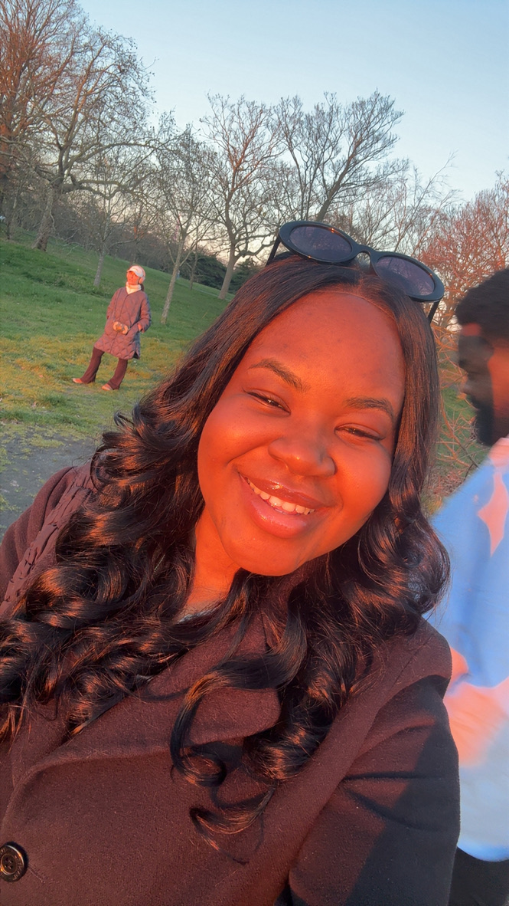

A little about me
Hello, I’m Daisy!
Product Designer, traveller and foodie
I’m based in London, currently designing enterprise data tools at J.P. Morgan.
I am driven by impact, and helping people to help themselves.
01 · The path here
My Path to Product Design Was Not Linear
- 01
Started in Business Admin and Cinematic Arts at USC, with a minor in screenwriting.
- 02
COVID rerouted me: moved back to Cape Town, did a visual design bootcamp, and discovered UX. Never looked back.
- 03
The screenwriting background still shows up in how I work: structure, sequence, and paying attention to how someone moves through an experience.

02 · Beyond the work
A little more me
Born in Nigeria, then lived in Germany, was raised in South Africa, lived in LA, and now London.
I play piano (since age 5), sketch portraits, and dabble in karaoke.
Cat mom to a Siamese and a Tuxedo with strong contrasting personalities.
I love movie marathons and binge watching shows.
I love the smell of a bookstore or library; nothing better than reading a good book.
Ice cream quirk: I always order vanilla + one wild card flavor.
Favorite pizza? A tropical pizza with banana, pineapple, and ham 😬.
03 · Let’s connect